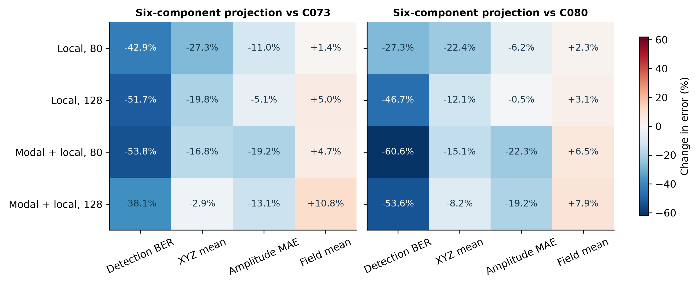
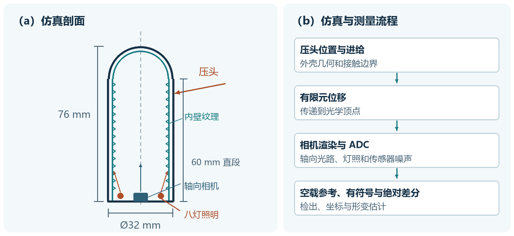
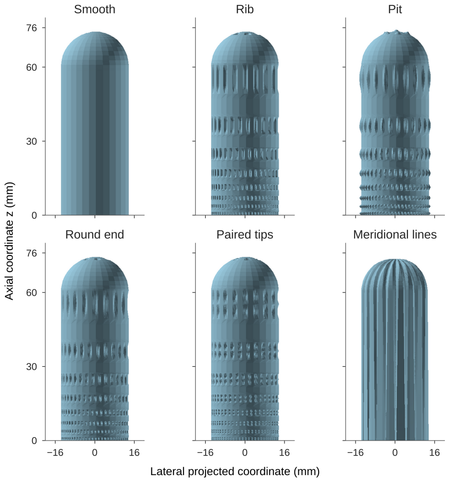
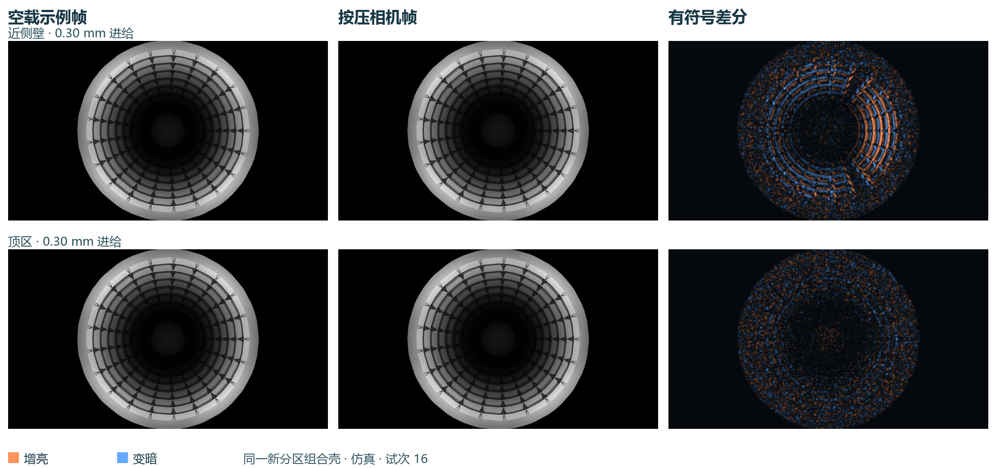
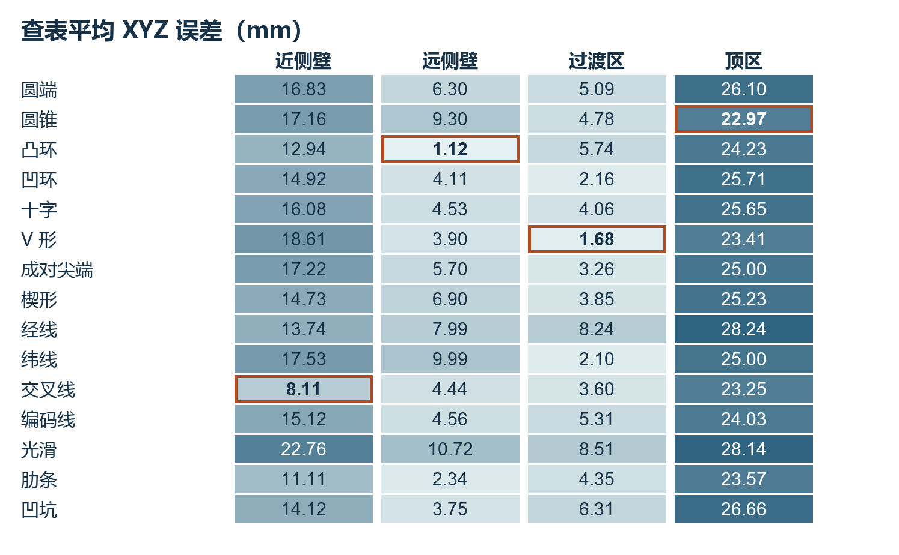
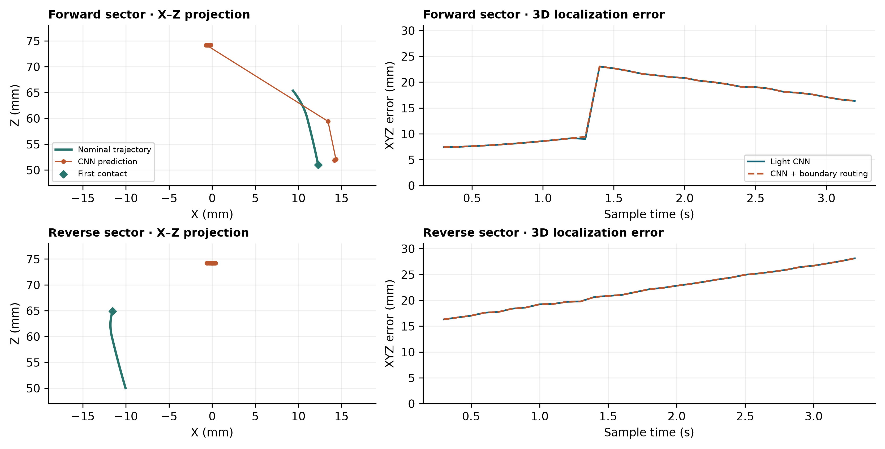
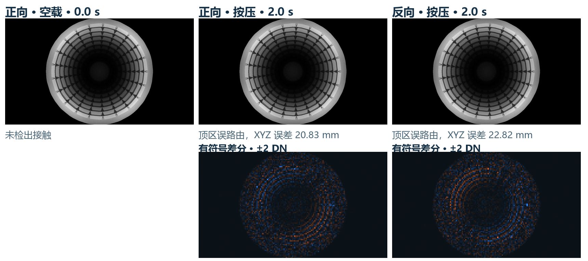

论文 C 完整修订稿
中英文各 18 页，各含 8 幅图、14 张表。
新组合壳在未见位置的仿真结果
离轴交界六处，两版均检出 96/96，平均 XYZ 误差分别为 14.23 和 15.54 mm。光滑带另六处，检出 81/96，检出帧平均 XYZ 误差 13.75 mm。

仿真剖面和测量流程

六种代表性内壁纹理

单点按压原图与有符号差分

15 种形貌的分区选型数据

跨区准静态轨迹与定位误差

正反向轨迹相机图与差分
